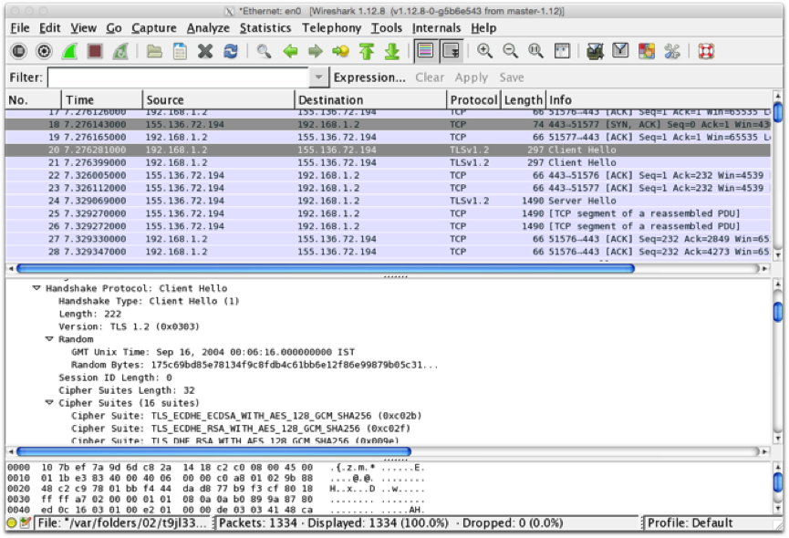

The objective of this lab is to learn about configuring TLS (formerly SSL) on web servers.
In this exercise, you will:
Set yourself up as a Certification Authority
Configure web server security
The term Certificate Authority (CA) refers to anyone who issues (i.e. signs) digital certificates. As we'll see below, anyone (even you!) can be a CA, though certain CAs are widely trusted on the Internet and their certificates are accepted by browsers that support them.
Most widely-recognised certificate authorities charge a fee for issuing certificates. Examples are Comodo GoDaddy, DigiCert and GlobalSign. Some have free trial certificates with short validity period (e.g. 30 days). There are also some free services, including Let's Encrypt. In practice, this is where you would get a certificate for a production server. For the purposes of this lab, however, we will generate our own.
To be a CA, you create a public/private key pair and issue yourself with a certificate containing this public key. This cert will be self-signed, meaning you'll be signing it with your private key.
Launch Linux or other environment that has OpenSSL installed and start a terminal session. In you do not have Linux on your own machine, you can create an AWS EC2 instance and connect to it using SSH.
We first create a 2048-bit RSA private key for the CA
openssl genrsa -out myca.key 2048The key is created in PEM format, which is printable:
cat myca.keyNow use this to create a certificate signing request (CSR) for the certificate authority (so the CA can sign its own key):
openssl req -new -key myca.key -out myca.csrYou will be prompted for identification data for the subject of this signing request. Make up an identity for your "pretend" CA (e.g. Highly Secure Certificates Ltd, or suchlike).
Now, as CA, use your private key to issue a (self-)signed certificate based on the CSR:
openssl x509 -req -trustout -signkey myca.key -in myca.csr -out myca.crtThe resulting certificate is valid for just 30 days (default). If you would like it to last longer (e.g. a year), run again with the additional option -days 365
openssl genrsa -out webserver.key 2048openssl req -new -key webserver.key -out webserver.csrGet the CA, using its private key, to sign the server’s CSR file:
openssl x509 -req -CA myca.crt -CAkey myca.key -CAcreateserial -in webserver.csr -out webserver.crtYou now have a web server public key, signed by a third party (the CA), in the file webserver.crt. You also have the web server's private key in the file webserver.key that you generated above.
(Optional) You could alternatively have got your web server to self-sign its certificate. The command for this is:
openssl x509 -req -in webserver.csr -signkey webserver.key -out webserver_self.crtThe next step is to configure your web server to be able to locate these keys.
You can configure a Hapi.js server to listen for HTTPS connections.
Make a directory (called private, for example) in a Hapi application and copy your webserver.key and webserver.crt files there. You may use an application you are working on, or download the very basic application provided here.
Add the following lines before adding a server connection:
const fs = require('fs');
var options = {
port: 4443, // or any port you wish
tls: {
key: fs.readFileSync('private/webserver.key'),
cert: fs.readFileSync('private/webserver.crt')
}
};
Then pass options as a parameter to server.connection():
server.connection(options);
Next start the server
node hapi_tls_example.jsTest that it’s working by pointing a web browser to https://localhost:4443 (replace localhost if published elsewhere).
Replace the reference to webserver.crt with webserver_self.crt as created in step 2, restart node and browse again to https://localhost:4443. Have a look at the certificate trust chain and see the difference.
Here, we similarly configure a Nginx server to listen for HTTPS connections.
Create an EC2 instance and connect to it with SSH/PuTTY.
Install nginx, enable at startup, and start service.
sudo yum -y update
sudo yum –y install nginx
sudo chkconfig nginx on
sudo service nginx startYou should now be able to browse to the public IP address of your instance and see the nginx welcome page.
Create a directory for the web server certificate and private key you created in part A above. You will need to copy them to your EC2 instance using SCP/WinSCP unless you wish to create new versions.
sudo mkdir /etc/pki/nginxCopy the certificate and key files to this location
sudo cp webserver.key /etc/pki/nginx
sudo cp webserver.crt /etc/pki/nginxNow edit the nginx configuration:
sudo nano /etc/nginx/nginx.confScroll down to the bottom of the file and find the section that begins with:
# HTTPS server
Nginx supports having more than one website enabled at the same time, which in effect means listening on a different port for each one. By default, one site is configured to listen on port 80. Your objective is to enable another site to listen on port 443.
To do this, uncomment the entire section under this heading
# Settings for a TLS enabled server.
#
server {
listen 443;
etc…
and make the two changes shown here:
ssl_certificate /etc/pki/nginx/webserver.crt;
ssl_certificate_key /etc/pki/nginx/webserver.key;
Finally, restart nginx:
sudo service nginx restartEdit your instance's security group to allow incoming connections to port 443.
Enter the following in a web browser:
https://ip_address(replacing ip_address with your instance’s Public IP address)
You'll get a warning as your certificate is signed by a CA that your browser doesn't trust. You should be able to view the certificate and verify that it's the one that you created.
Using Wireshark or equivalent, capture the setup of a TLS session from a browser to a web server. It should start with a "Client Hello" message, something like that shown here: 
Trace the TLS handshake. What TLS version is used? What Cipher Suite does the browser prefer? Does the server match this? Try a variety of browsers and web servers and see if you can find examples where they don't match.
On your Nginx configuration, edit the nginx.conf file to force browsers to downgrade from TLSv1 and describe what happens. Try a variety of browsers and see if they all treat this in the same way.
Re-enable TLSv1 and now see what happens when you change the supported cipher specs to something different, and see how various browsers respond. You'll need to change the line in the nginx SSL configuration that begins with ssl_ciphers. Try for example to change it to: RC4-MD5
Note that you can also force browsers to only use an up to date version and/or cipher – e.g. TLSv1.2. Are there any disadvantages in doing this? There are various test suites available that allow you to try old browser versions – e.g. https://crossbrowsertesting.com or https://www.browserling.com